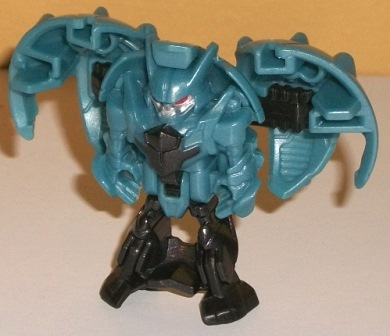
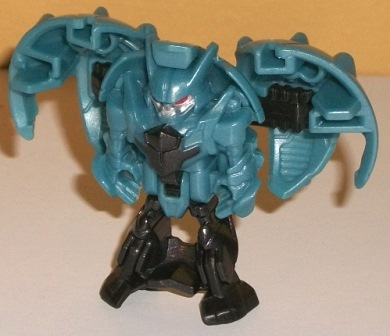
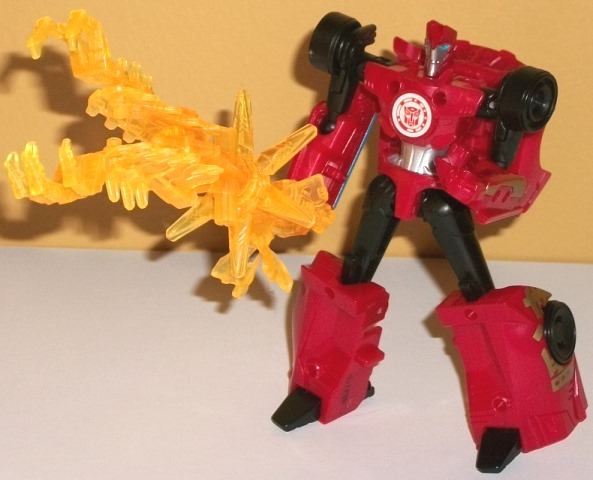

Allegiance: Decepticon
Size : Mini-Con
Difficulty of Transformation : Very Easy
Color Scheme : Dull milky grayish blue, black, and some silver and moderately dark red
Individual Rating : 4.2
 Decepticon
Anvil
Decepticon
Anvil

Allegiance:
Decepticon
Size
: Mini-Con
Difficulty of Transformation
: Very
Easy
Color Scheme
: Dull milky grayish
blue, black, and some silver and moderately dark red
Individual Rating
: 4.2
Well, we've already got
a Decepticon Mini-Con named
Hammer
, so it's
time for his buddy, Anvil! (I love these names that make little sense by
themselves but work great when used with another Mini-Con partner.) Anvil's
alternate mode is a spiked ball, and it's pretty darned solid. Particularly
on the top, it just looks like a segmented ball with small spikes coming
out of the top and bottom of each segment. Near the bottom, because of
the fold-out transformation there's a few gaps, the worst of which is when
looked at directly from the bottom, in which you can see a fairly large
gap in between the pieces that become his hands and the piece that becomes
his pelvis. Generally though, these gaps are pretty minimal and detract
little from the overall look and silhouette of the mode. The mold detailing
is a bit sparse in this mode compared to most RID2015 Mini-Cons, with some
segmented lines running down the figure but otherwise a pretty smooth alt
mode. The color scheme is mostly a dull milky grayish blue, which isn't
a horrible color but is a bit bland. There's some black, mostly near the
bottom of this mode as it becomes the legs. By itself the colors go together
alright even though they're nothing exciting. However, the way the mold
plastic breakup is done, the usage of the black is pretty uneven-- honestly
I mind that more than any small gaps in this mode, the breakup of the colors
should be more symmetrical.
To transform Anvil to
robot mode, you just take the ball mode and split it in half, with the
legs moving down automatically, and then you manually fold out each foot.
It's a pretty basic "shellformer" robot mode, with the robot mode all molded
into the interior section of the ball, with the black legs below it and
the shells of basically the entire ball mode off on each side. I'm not
sure if the shells are supposed to be wings (they're a bit wide near where
they meet the body and aren't long enough) or if they're just supposed
to be kibble. Regardless, they do give Anvil a more unique silhouette,
though I wish they weren't as large proportionally, and at least part of
them were involved in parts of his actual robot mode. His robot mode detailed
in the center is rather angular, with skinny arms, several small details
on the chest and knees down below, and a headsculpt that looks sort of
like an evil goblin, what with the long ears and underbite on the jaw,
along with large beady red eyes. (There's also some silver on the face
and a bit of black paint on the chest, but otherwise-- as with most RID2015
Mini-Cons-- Anvil is pretty paint-free.) Beyond a bit of vent detailing
on the bottom, unfortunately there's no mold detailing on the inside of
the wings, just some hollow pegs and holes and a few visible pieces involved
in the auto-transformation. Unfortunately Anvil's entire body is mold detailing--
he has no articulation in this mode whatsoever.
 Sideswipe
Sideswipe

Allegiance
: Autobot
Difficulty of Transformation
: Very
Easy
Color Scheme
: Moderately dark milky
red, black, translucent light orange, and some silver, moderately light
blue, and pale metallic gold
Individual Rating
: 8.2
This is Sideswipe; you
probably know him pretty well by now. His sportscar alternate mode is replicated
pretty darned well for this Battle Pack version, with no real proportional
problems beyond the windows rising up even less from the front hood than
they usually do; he's pretty darned flat up top, there. Because of the
coloration, the feet are pretty obvious on the top of this mode, but otherwise
they fit in pretty well with the rest of the figure. On the back end you
can see the knees, as there's not much of a back end beyond little taillight
details near the sides. The rest of Sideswipe is largely as you'd expect--
an angular car mode; dark red and black are the main colors; he's mostly
sparsely detailed in terms of the mold, but there's a few bits of more
intricate detailing like the angular bits on the front grill and headlights
and some divot details near the back end. What helps differentiate Sideswipe
a bit in terms of color is that the windows are painted a nice fairly light
shade of blue, which contrasts VERY well against the dark red. The rear
side window details aren't painted blue, though, unfortunately, though
the headlights are. The kanji symbols near the back end are painted in
a really nice gold, too, which looks great. Sideswipe also has a port on
the top of this mode to hold compatible 5mm weapons.
When looking at the
transformation and robot mode, it's obvious this version of Sideswipe--
at least the core robot mode-- is a larger version of the
Legion-class
design
(in terms of design, not in terms of just upsizing that mold;
the details are definitely different and crisper). You rotate the arms
forward at the elbows and the roof folds behind his back a little more,
but otherwise the transformation is the same very basic transformation
of the Legion mold, with the arms forming from the car doors, the rear
portion of the car mode folding down to form the legs, and the front hood
basically folding back behind the body. That hood piece doesn't lock in
anywhere and sticks out a bit behind Sideswipe's main body, which I find
a bit of an eyesore. There's also a bit of kibble hanging off the inner
portions of the lower arms, but those are relatively minor given the toy's
still smaller than a Warrior (he's roughly the size of a 1-step changer).
The wheels articulate out very well to form the shoulders, and the fists
are molded pretty nicely into those lower leg pieces. The legs are what
you'd expect from the transformation, with the lower legs being a bit too
large proportionally but otherwise they're pretty solid. Sideswipe has
the usual faux car details on his chest, the punk hairdo on his head, and
the like-- there's a circle added to the middle of the chest for the RID2015
scan sticker, but otherwise there's nothing new here. The face is painted
silver with blue eyes (though his expression is a bit stern, not a smirk
like it usually is), along with silver on the abs and some gold on the
sides of the lower arms. I wish there was a bit more paint on the lower
arms and chest, but otherwise he's pretty decent color-wise in this mode.
For articulation in this mode, he can move side-to-side at the neck, and
at the shoulders (at two points), elbows, hips, knees, and slightly up-and-down
at the ankles.
Mini-Con Battle Packs
are rather deceptively named; the main transformer is actually the focus
of these packs, not the Minicon, as the larger ones are the ones that come
with armor pieces this time! For Sideswipe, he has some translucent light
orange armor pieces, which of course contrast and complement against the
dark red pretty well (though I wish they were a more fiery orange). His
armor pieces are also exquisitely detailed in terms of the mold, which
contrasts with the fairly sparse detailing of the main figure. He's got
feathered armored pieces for each lower leg; a samurai-like chest piece
with a flip-up helmet-like piece that fits in front of his face; two dual-clawed
wicked-looking pieces that attach to the end of each lower arm; and two
pieces that, together, form a mace with a star-like hilt. It's a pretty
darned cool look, and given the kanji on Sideswipe's side, samurai armor
fits him oddly well. Like the other Battle Packs, the armor can also form
a large weapon. The chest/armor piece pegs on below the star portion of
the mace, while the two lower legs and two claw pieces each peg together
and then peg onto the top of the mace to form a monstrous claw weapon.
It's a bit long compared to the size of Sideswipe, but it looks mighty
cool, though the chest piece does kinda hang off there unceremoniously.
Battle Pack Sideswipe
vs. Anvil is a mixed bag. Sideswipe himself has a fairly boring transformation
that isn't anything to write home about, but he looks pretty solid in both
modes, has some nice paint apps, and has a great accessory that can form
either a weapon or some killer armor. Anvil has a nice ball mode, but his
color scheme is dull and he's too much of a shell-former, even for a Mini-Con.
If you don't have a Legion class Sideswipe this is a nice bit of an "upgrade",
but don't get this pack because of Anvil.
Reviews by Beastbot